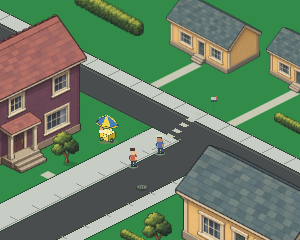
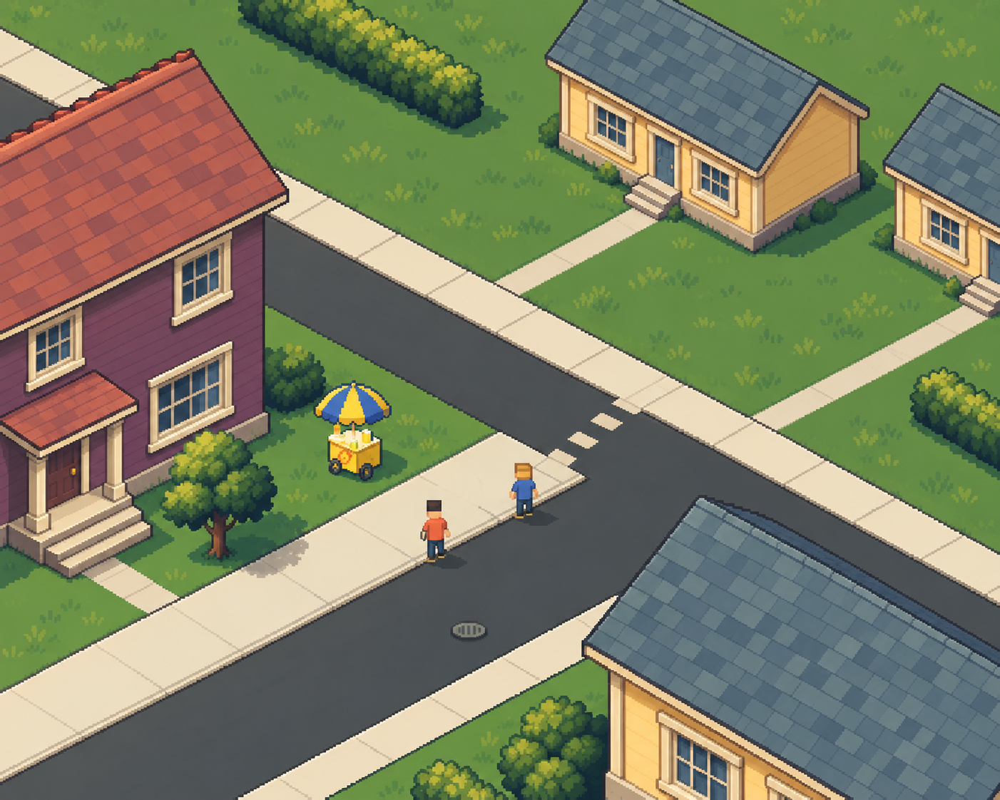
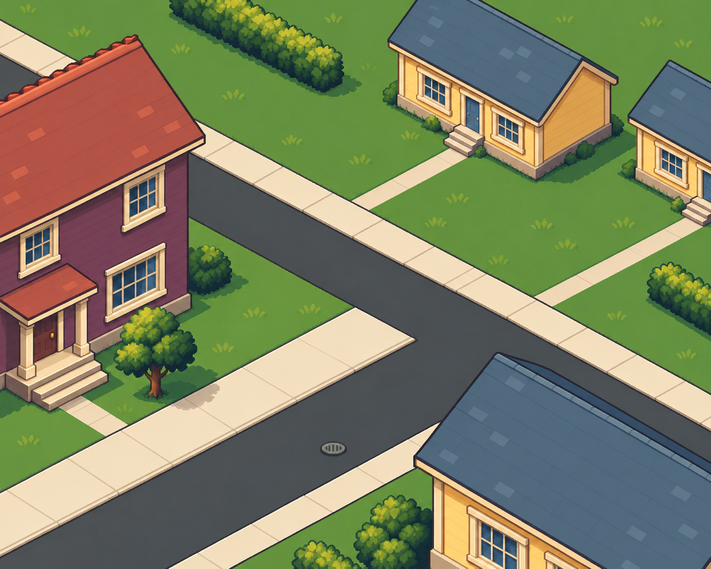
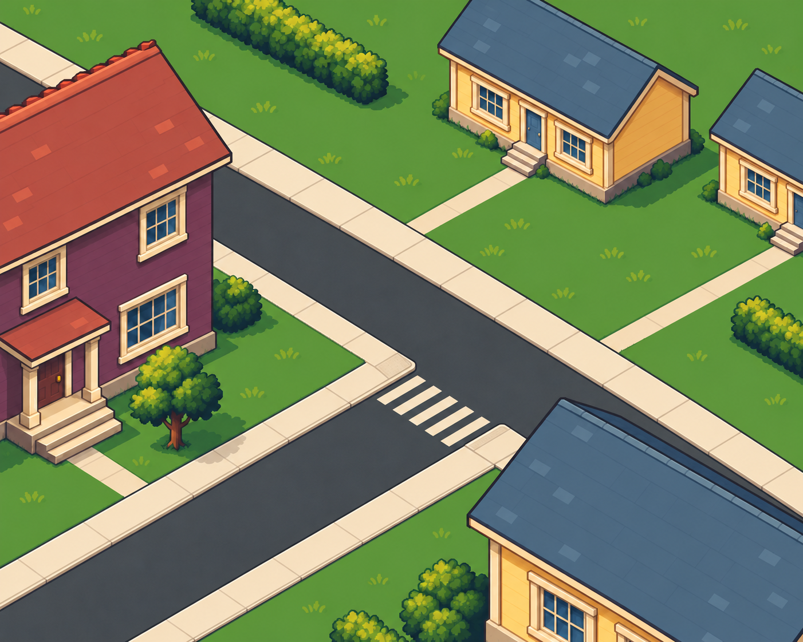
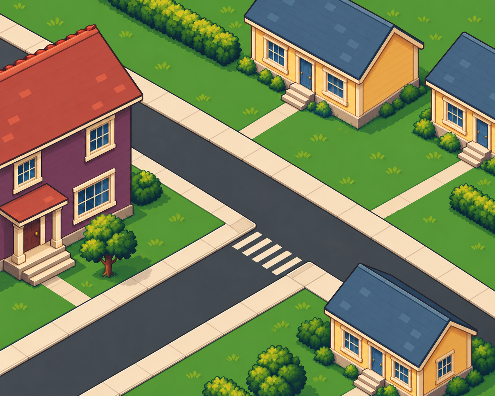

기존 PR250 합성 장면

집·나무와 지면의 묘사 차이, 지붕 타일의 강한 대비를 검토합니다.
위는 실제 논리 크기 300×240, 아래는 2배 확대입니다. 기존 게임 자산은 보존했습니다. 새 그림은 미술 방향 검토용이며 보행 좌표와의 정합성·게임 통합은 아직 검증하지 않았습니다.

집·나무와 지면의 묘사 차이, 지붕 타일의 강한 대비를 검토합니다.

색·접촉 그림자를 통일했습니다. 생성된 사람·카트가 포함되어 제품 배경으로 쓸 수 없습니다. 지붕의 반복 무늬도 여전히 강합니다.

사람·카트를 제거하고 질감을 줄이는 후속 시안입니다. 제품 채택 여부와 미술 수용은 별도 판단입니다.

도로의 평행한 경계와 인도 폭을 맞추고, 교차로 모서리에 회전하는 인도와 횡단보도를 배치했습니다. 건물·색감은 유지하는 방향입니다. 기존 보행 좌표에 대한 제품 검증은 아직 하지 않았습니다.

위쪽 단층집을 키우고 아래쪽 집을 줄였습니다. 집마다 현관문·창·층 높이가 같은 축척으로 읽히는지 비교합니다. 보라색 집은 2층으로 유지했습니다. 현재 게임에 적용한 화면은 아닙니다.